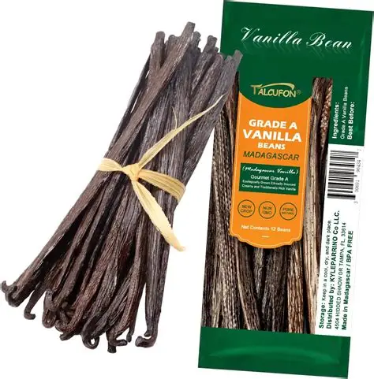
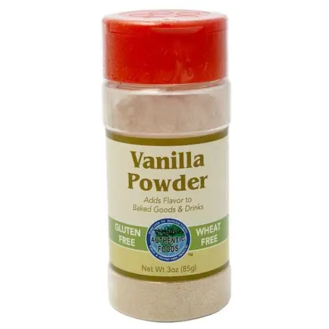

Nos produits et Services

Gousses de vanille – 10g
Vanille gourmet, affinée 9 mois.
20 €
HUILES de vanille – 5ml
Idéal pour pâtisserie et restauration.
30 €
Poudre de vanille – 20g
100% naturelle, sans additif.
18 €